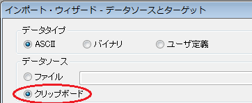
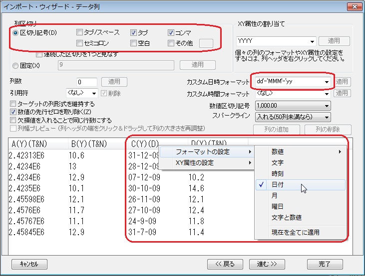
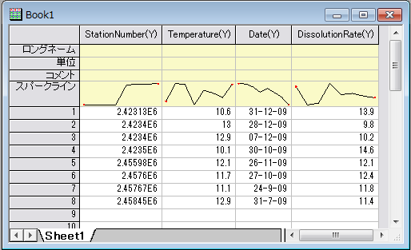

インポートウィザードを使ってクリップボードのデータをインポートする
ImpWiz-ClipboardData
サマリー
インポートウィザードを使って柔軟なカスタマイズ機能を持つクリップボードデータをインポートできます。クリップボードのデータを直接ワークシートに貼り付けることもできますが、クリップボードデータが統合化されていないと、ワークシート内のデータは乱雑になります。
たとえば、クリップボードに各行をカンマで区切った2列のデータがあるとします。直接ワークシートにデータを貼り付けると、2つの列データセットは、ワークシート内の異なる2列ではなく、1つの列に現れます。
インポートウィザードを使えば、インポートオプションをカスタマイズし、インポート処理を進めることができます。以下は、クリップボードデータをインポートするときに使用される機能の一部です。
- 列区切りをセットし、ワークシート内の整列されていないデータを保持します。
- 列のXY属性を指定し、日付などのデータ形式をカスタマイズします。
- 列名の割り当てや、今後似たようなデータをインポートするためのインポートフィルタ など、他のカスタマイズオプションが利用できます。
インポートウィザードページで、このツールの詳細を見ることができます。
学習する項目
以下のセクションでは、次の項目を行う方法を示します。
- インポートウィザードを使ってクリップボードデータをOriginにインポートします。
- データがインポートされるワークシートのショートネームを割り当てます。
- 列の区切りを指定します。
- 日付データのフォーマットをカスタマイズします。
ステップ
- ヘッダ行を含む このテーブル のすべての行を選択します。
- Originの新しいプロジェクトを作成し、標準ツールバーのインポートウィザードボタン(または、ファイル: インポート: インポートウィザード) をクリックし、ダイアログを開きます。
- ウィザードの最初のページ(データソース) で、データソースグループからクリップボードを選びます。
- 
- そして、進むをクリックし、ヘッダ行ページに行き、データをインポートするワークシートのショートネームをセットします。 ショートネームドロップダウンリストから1を選択し、ロングネームドロップダウンリストから<なし>を選択します。
- 進むボタンを2回クリックし、データ列ページに行き、列の区切りを指定し、日付データのフォーマットをカスタマイズします。このページで以下のことを行ってください:
- 列区切りグループのタブとカンマチェックボックスを有効にし、区切りとして、タブとカンマを使います。
- カスタム日時フォーマットでdd'-'MMM'-'yyと入力し、適用ボタンをクリックして適用します。
- Date列のヘッダを右クリックし、列フォーマット: 日付を選びます。
- 
- 完了ボタンをクリックし、クリップボードデータをワークシートにインポートします。ワークシート内のデータは、次のようになります。
- 
| Note:
インポートウィザードができることは他にもたくさんあります。詳細は、インポートウィザードをご覧ください。
|
テストデータ
| StationNumber,Temperature
|
Date
|
DissolutionRate
|
| 2.42313E6,10.6
|
31-Dec-09
|
13.9
|
| 2.4234E6,13
|
28-Dec-09
|
9.8
|
| 2.4234E6,12.9
|
7-Dec-09
|
10.2
|
| 2.4235E6,10.1
|
30-Oct-09
|
14.6
|
| 2.45598E6,12.1
|
26-Nov-09
|
12.1
|
| 2.4576E6,11.7
|
27-Oct-09
|
12.4
|
| 2.45767E6,11.1
|
24-Sep-09
|
11.8
|
| 2.45845E6,12.9
|
31-Jul-09
|
11.4
|